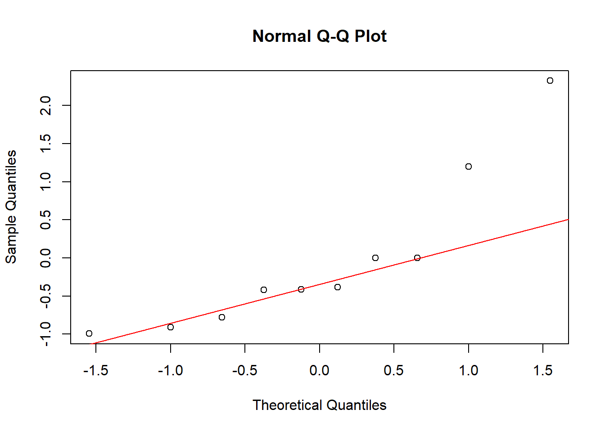

## Warning: package 'readxl' was built under R version 4.4.2
Carga y visualización de los datos
library(readxl)
habitaciones <- read_excel("C:/Users/User/Downloads/habitaciones.xlsx")
colnames(habitaciones) <- c("Habitaciones", "Kilowatts_hora")
kable(habitaciones, caption = "Tabla 1. Datos de número de habitaciones y consumo de kilowatts-hora",
align = 'c') %>%
kable_styling(bootstrap_options = c("striped", "hover", "condensed", "responsive", "bordered"),
full_width = F,
position = "center")
Tabla 1. Datos de número de habitaciones y consumo de kilowatts-hora
|
Habitaciones
|
Kilowatts_hora
|
|
12
|
9
|
|
9
|
7
|
|
14
|
10
|
|
6
|
5
|
|
10
|
8
|
|
8
|
6
|
|
10
|
8
|
|
10
|
10
|
|
5
|
4
|
|
7
|
7
|
La Tabla 1 presenta los datos recolectados por una empresa de
electricidad para estudiar la relación entre el número de habitaciones
de una vivienda familiar y el consumo mensual de energía medido en
kilowatts-hora (miles). Se recopilaron observaciones de 10 hogares,
registrando para cada uno el número de habitaciones y su correspondiente
consumo eléctrico. Estos datos servirán como base para aplicar un modelo
de regresión lineal simple, con el objetivo de predecir el consumo
energético en función del número de habitaciones.
1. Ajuste del modelo de regresión lineal simple y
ecuación
# Ajustar modelo de regresión lineal simple
modelo <- lm(Kilowatts_hora ~ Habitaciones, data = habitaciones)
# Ver resumen del modelo
summary(modelo)
##
## Call:
## lm(formula = Kilowatts_hora ~ Habitaciones, data = habitaciones)
##
## Residuals:
## Min 1Q Median 3Q Max
## -0.6667 -0.5833 -0.3333 0.0000 2.0000
##
## Coefficients:
## Estimate Std. Error t value Pr(>|t|)
## (Intercept) 1.3333 1.0559 1.263 0.242227
## Habitaciones 0.6667 0.1116 5.973 0.000333 ***
## ---
## Signif. codes: 0 '***' 0.001 '**' 0.01 '*' 0.05 '.' 0.1 ' ' 1
##
## Residual standard error: 0.9129 on 8 degrees of freedom
## Multiple R-squared: 0.8168, Adjusted R-squared: 0.794
## F-statistic: 35.68 on 1 and 8 DF, p-value: 0.0003332
A partir del ajuste del modelo de regresión lineal simple, se
encontró que el número de habitaciones influye de manera positiva y
significativa sobre el consumo de energía eléctrica (en miles de
kilowatts-hora).
Los principales resultados son:
Intercepto \((b_0 = 1{,}333)\):
representa el consumo estimado cuando una vivienda tiene 0
habitaciones.
Pendiente \((b_1 = 0{,}6667)\):
indica que por cada habitación adicional, el consumo de energía aumenta
en promedio \(0{,}667\) mil
kilowatts-hora.
Valor p: \(0{,}000333\). Como es
menor que \(0{,}05\), se confirma que
el número de habitaciones es un factor importante para explicar el
consumo.
Coeficiente de determinación \((R^2 =
0{,}8168)\): el modelo explica el \(81{,}68\%\) de la variación en el consumo
de energía.
Error estándar residual: \(0{,}9129\), que muestra el promedio de
error entre los valores observados y los estimados.
Para construir la ecuación de la regresión, se extrajeron los
coeficientes estimados (intercepto y pendiente), como se muestra a
continuación:
# Extraer los coeficientes del modelo
coeficientes <- coef(modelo)
# Mostrar los coeficientes
kable(as.data.frame(t(coeficientes)),
col.names = c("Intercepto (b0)", "Pendiente (b1)"),
caption = "Tabla 2. Coeficientes estimados del modelo de regresión") %>%
kable_styling(bootstrap_options = c("striped", "hover", "condensed", "responsive","bordered"),
full_width = F,
position = "center")
Tabla 2. Coeficientes estimados del modelo de regresión
|
Intercepto (b0)
|
Pendiente (b1)
|
|
1.333333
|
0.6666667
|
Con los coeficientes obtenidos, la ecuación estimada del modelo de
regresión es:
\[
\hat{y} = 1{,}333 + 0{,}667 x
\]
Donde \(\hat{y}\) representa el
consumo estimado de energía (en miles de kilowatts-hora) y \(x\) corresponde al número de
habitaciones.
2. Estimación del consumo para una casa de 4
habitaciones
Con la ecuación de regresión estimada, es posible predecir el consumo
de energía para una vivienda que tenga un número específico de
habitaciones. A continuación, se estima el consumo para una casa con 4
habitaciones:
\[
\hat{y} = 1{,}333 + 0{,}667 \times 4 = 4{,}000
\]
# Crear nuevo dato
nueva_casa <- data.frame(Habitaciones = 4)
# Realizar la predicción
prediccion_4_habitaciones <- predict(modelo, nueva_casa)
# Mostrar el resultado con tres decimales
cat("El consumo estimado para una vivienda con 4 habitaciones es:",
format(prediccion_4_habitaciones, nsmall = 3),
"miles de kilowatts-hora.\n")
## El consumo estimado para una vivienda con 4 habitaciones es: 4.000 miles de kilowatts-hora.
3. Cálculo de los grados de libertad del componente de
residuos en el análisis de varianza
En el análisis de varianza (ANOVA) aplicado a regresión lineal, la
variabilidad total se divide en dos componentes: la variabilidad
explicada por el modelo (regresión) y la variabilidad no explicada
(residuos o error). El componente de residuos representa la parte de la
variación que no logra ser explicada por la relación lineal entre las
variables. Su análisis permite evaluar el ajuste del modelo.
# Mostrar la tabla ANOVA del modelo para verificar los grados de libertad de los residuos
anova(modelo)
## Analysis of Variance Table
##
## Response: Kilowatts_hora
## Df Sum Sq Mean Sq F value Pr(>F)
## Habitaciones 1 29.7333 29.7333 35.68 0.0003332 ***
## Residuals 8 6.6667 0.8333
## ---
## Signif. codes: 0 '***' 0.001 '**' 0.01 '*' 0.05 '.' 0.1 ' ' 1
En el análisis de varianza (ANOVA) de regresión, los grados de
libertad del componente de residuos se calculan como:
\[
gl_{\text{residuos}} = n - (k + 1) = 10 - 2 = 8
\]
Este valor representa la cantidad de información disponible para
estimar la variabilidad del error, y puede observarse en la fila
correspondiente a los residuos en la tabla ANOVA del modelo
ajustado.
4. Cálculo de la Suma de Cuadrados del Componente de
Residuos (SCE)
La suma de cuadrados del componente de residuos (SCE) mide la
cantidad de variabilidad de la variable respuesta que el modelo no logra
explicar. Este valor se obtiene sumando los cuadrados de las diferencias
entre los valores observados y los valores predichos por el modelo, es
decir, elevando cada residuo al cuadrado y luego sumándolos. Como se
observa en la tabla ANOVA generada previamente, en la fila
correspondiente a los “Residuos”, el valor de la suma de cuadrados es
aproximadamente 6,667, lo cual podemos corroborar con
el siguiente chunk de código:
# Calcular la suma de cuadrados de los residuos
suma_cuadrados_residuos <- sum(resid(modelo)^2)
cat("La suma de cuadrados de los residuos (SCE) es aproximadamente:",
format(round(suma_cuadrados_residuos, 3), nsmall = 3),
"miles de kilowatts-hora².\n")
## La suma de cuadrados de los residuos (SCE) es aproximadamente: 6.667 miles de kilowatts-hora².
5. Interpretación de la pendiente \(b_1\)
Teniendo en cuenta que la ecuación de la regresión lineal es:
\[
\hat{y} = 1{,}333 + 0{,}667 \times x
\]
Observando la ecuación de regresión lineal, \(b_1\) es un parámetro estimado que tiene un
valor de aproximadamente \(0{,}667\) y
simboliza el cambio en el consumo de kilowatts-hora por cada habitación
adicional en la vivienda.
6. Interpretación del intercepto \(b_0\)
Teniendo en cuenta la ecuación anterior, observando la ecuación de
regresión lineal, \(b_0\) es un
parámetro estimado con un valor de aproximadamente \(1{,}333\) y simboliza el consumo de energía
(en miles de kilowatts-hora) cuando el número de habitaciones es igual a
cero.
7. Prueba de hipótesis sobre \(b_1\)
Para determinar si el número de habitaciones tiene un efecto
significativo sobre el consumo de energía, se realiza una prueba de
hipótesis sobre el parámetro \(b_1\),
correspondiente a la pendiente de la recta de regresión.
Paso 1: Plantear las hipótesis
\(H_0: \beta_1 = 0\)
(El número de habitaciones no tiene efecto sobre el consumo)
\(H_1: \beta_1 \neq 0\)
(El número de habitaciones sí tiene efecto sobre el consumo)
Paso 2: Establecer el nivel de significancia
Se adopta un nivel de significancia de:
\(\alpha = 0{,}05\)
Paso 3: Determinar la estadística de prueba
En regresión lineal simple, el estadístico de prueba puede obtenerse
de dos formas:
a) Utilizando el estadístico \(t\):
summary(modelo)$coefficients
## Estimate Std. Error t value Pr(>|t|)
## (Intercept) 1.3333333 1.0558636 1.262789 0.2422272850
## Habitaciones 0.6666667 0.1116083 5.973274 0.0003331849
Como se puede observar en los resultados del modelo, el estadístico
de prueba \(t\) es aproximadamente:
\[
t = 5{,}9753
\]
b) Utilizando el estadístico \(F\):
# Mostrar resumen del modelo
modelo_summary <- summary(modelo)
# Extraer el estadístico F
modelo_summary$fstatistic
## value numdf dendf
## 35.68 1.00 8.00
Como se puede observar en los resultados del modelo, el estadístico
de prueba \(F\) obtenido es
aproximadamente:
\[
F = 35{,}684
\]
Ambos estadísticos están relacionados en el caso de la regresión
lineal simple mediante la siguiente fórmula, dado que solo existe una
única variable predictiva:
\[
F = t^2
\]
Por lo tanto:
\[
F = (5{,}9753)^2 = 35{,}684
\]
Paso 4: Determinación del valor p
Para la determinación del valor p de ambos estadísticos, emplearemos
el resumen del modelo:
# Mostrar resumen del modelo
summary(modelo)
##
## Call:
## lm(formula = Kilowatts_hora ~ Habitaciones, data = habitaciones)
##
## Residuals:
## Min 1Q Median 3Q Max
## -0.6667 -0.5833 -0.3333 0.0000 2.0000
##
## Coefficients:
## Estimate Std. Error t value Pr(>|t|)
## (Intercept) 1.3333 1.0559 1.263 0.242227
## Habitaciones 0.6667 0.1116 5.973 0.000333 ***
## ---
## Signif. codes: 0 '***' 0.001 '**' 0.01 '*' 0.05 '.' 0.1 ' ' 1
##
## Residual standard error: 0.9129 on 8 degrees of freedom
## Multiple R-squared: 0.8168, Adjusted R-squared: 0.794
## F-statistic: 35.68 on 1 and 8 DF, p-value: 0.0003332
a) El valor_p para el estadístico \(t\):
\[
p\text{-valor}(t) = 2 \times P(T_8 > 5{,}9753)
\]
El valor p asociado al estadístico \(t\) para la variable número de
habitaciones, obtenido a partir de la salida del modelo, es
aproximadamente:
\[
p\text{-valor}(t) \approx 0{,}000333
\]
a) El valor_p para el estadístico \(F\):
\[
p\text{-valor}(F) = P(F > 35{,}684)
\]
El valor p asociado al estadístico \(F\), obtenido en la parte inferior de la
salida del modelo, es:
\[
p\text{-valor}(F) \approx 0{,}000333
\]
Paso 5: Comparación entre valor p y nivel de
significancia
El valor p obtenido para la prueba de hipótesis sobre \(b_1\) utilizando el estadístico \(t\) es aproximadamente:
\[
p\text{-valor}(t) = 0{,}000333
\]
El valor p obtenido a partir de la prueba de hipótesis utilizando el
estadístico \(F\) también es
aproximadamente:
\[
p\text{-valor}(F) = 0{,}000333
\]
El nivel de significancia adoptado para la prueba es:
\[
\alpha = 0{,}05
\]
Comparando ambos valores p con el nivel de significancia:
\[
p\text{-valor}(t) = 0{,}000333 < 0{,}05
\] \[
p\text{-valor}(F) = 0{,}000333 < 0{,}05
\]
En ambos casos, el valor p es menor que \(\alpha\), por lo que se rechaza la
hipótesis nula (\(H_0\)).
Paso 6: Conclusión
Se rechaza la hipótesis nula (\(H_0\)) y se concluye que existe evidencia
estadísticamente significativa para afirmar que el número de
habitaciones tiene un efecto sobre el consumo de energía eléctrica, de
esta manera, se confirma que el parámetro \(b_1\) es relevante dentro del modelo de
regresión, y que el número de habitaciones constituye un factor
importante para explicar la variabilidad observada en el consumo de
energía.
8. Indique si las afirmaciones son V o F
8.1 El coeficiente de correlación indica que hay una fuerte
asociación lineal entre las variables
# Cálculo del coeficiente de correlación (r)
correlacion <- cor(habitaciones$Habitaciones, habitaciones$Kilowatts_hora)
cat("Coeficiente de correlación (r):", round(correlacion, 4))
## Coeficiente de correlación (r): 0.9038
La afirmación es verdadera porque el valor del coeficiente de
correlación es cercano a 1 y positivo, indicando una asociación lineal
fuerte y directa entre el número de habitaciones y el consumo de
energía.
8.2 La variable dependiente corresponde al número de
habitaciones de la vivienda familiar
La afirmación es falsa porque la variable dependiente es el consumo
de energía eléctrica (kilowatts-hora), no el número de habitaciones.
8.3 En un 81,68% el modelo explica la variación de los
kilowatts-hora con el número de habitaciones de la vivienda
familiar
# Cálculo del coeficiente de determinación (R^2)
determinacion <- correlacion^2
cat("Coeficiente de determinación (R^2):", round(determinacion, 4))
## Coeficiente de determinación (R^2): 0.8168
La afirmación es verdadera porque el coeficiente de determinación
indica que el 81,68% de la variabilidad en el consumo de energía se
explica a través del número de habitaciones.
9. Prueba de hipótesis para el coeficiente de correlación de
Pearson
Se realiza una prueba de hipótesis para evaluar si existe una
correlación significativa entre el número de habitaciones y el consumo
de energía eléctrica.
Paso 1: Plantear las hipótesis
Paso 2: Establecer el nivel de significancia
Se adopta un nivel de significancia de:
\[
\alpha = 0{,}05
\]
Paso 3: Determinar la estadística de prueba
Se utiliza el test de Pearson para calcular el estadístico de prueba
y su valor p:
cor.test(habitaciones$Habitaciones, habitaciones$Kilowatts_hora)
##
## Pearson's product-moment correlation
##
## data: habitaciones$Habitaciones and habitaciones$Kilowatts_hora
## t = 5.9733, df = 8, p-value = 0.0003332
## alternative hypothesis: true correlation is not equal to 0
## 95 percent confidence interval:
## 0.6362086 0.9772915
## sample estimates:
## cor
## 0.9037974
Paso 4: Determinación del valor p
Del resultado del cor.test(), el valor p se calcula
considerando que el estadístico de prueba es:
\[
t = 5{,}9753
\]
El valor p para una prueba bilateral se obtiene mediante:
\[
p\text{-valor}(t) = 2 \times P(T_8 > 5{,}9753)
\]
donde \(T_8\) representa una
distribución t de Student con 8 grados de libertad. El resultado es el
siguiente:
\[
p\text{-valor}(t) \approx 0{,}000333
\]
Paso 5: Comparación entre valor p y nivel de
significancia
La comparación entre el valor_p y alfa es:
\[
p\text{-valor} = 0{,}000333 < 0{,}05
\]
Dado que el valor p es menor que el nivel de significancia \(\alpha\), se rechaza la hipótesis nula
(\(H_0\)).
Paso 6: Conclusión
Se concluye que existe evidencia estadísticamente significativa para
afirmar que el número de habitaciones y el consumo de energía eléctrica
están correlacionados de manera lineal.
10. Validación de los supuestos del modelo de
regresión
A continuación se presentan los análisis realizados para verificar
los supuestos fundamentales del modelo de regresión lineal simple:
normalidad de los residuos, homocedasticidad, y linealidad.
10.1 Supuesto de homocedasticidad (varianza
constante)
Para evaluar si los residuos presentan varianza constante, se realiza
la prueba de Breusch-Pagan:
## Warning: package 'car' was built under R version 4.4.3
## Cargando paquete requerido: carData
## Warning: package 'carData' was built under R version 4.4.3
## Non-constant Variance Score Test
## Variance formula: ~ fitted.values
## Chisquare = 0.02989537, Df = 1, p = 0.86273
El valor p obtenido en la prueba de Breusch-Pagan fue 0,8627, mayor
que 0,05, por lo cual no se rechaza la hipótesis nula de
homocedasticidad, entonces se concluye que los residuos presentan
varianza constante.
10.2 Supuesto de normalidad de los residuos
Para verificar si los residuos siguen una distribución normal, se
utilizan el gráfico Q-Q y la prueba de Shapiro-Wilk.
Gráfico Q-Q:
residuos <- rstandard(modelo)
qqnorm(residuos)
qqline(residuos, col = "red")

En el gráfico Q-Q de los residuos estandarizados se observa que
algunos puntos siguen aproximadamente la línea de referencia, mientras
que otros, especialmente hacia los extremos, presentan desviaciones
considerables. Este comportamiento indica que los residuos no se ajustan
completamente a una distribución normal, por lo que el supuesto de
normalidad no se cumple de manera estricta.
Shapiro-Wilk:
Para evaluar la normalidad de los residuos mediante la prueba de
Shapiro-Wilk, se plantean las siguientes hipótesis:
shapiro.test(resid(modelo))
##
## Shapiro-Wilk normality test
##
## data: resid(modelo)
## W = 0.76751, p-value = 0.005832
El valor p obtenido fue:
\[
p\text{-valor} = 0{,}005832
\]
Comparación contra el nivel de significancia:
\[
p\text{-valor} = 0{,}005832 < 0{,}05
\]
Dado que el valor p es menor que \(\alpha =
0{,}05\), se rechaza la hipótesis nula (\(H_0\)), concluyendo que los residuos no
siguen una distribución normal.
